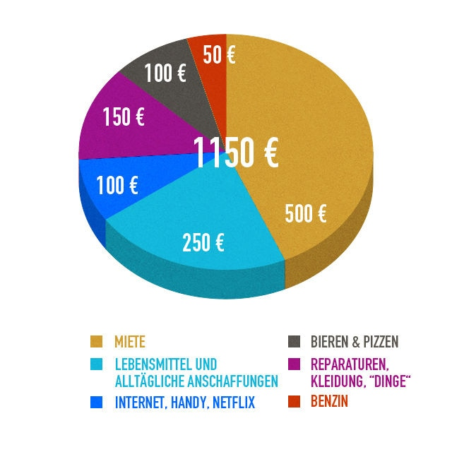

Wie man eine Versicherung und unendliches Geld bei Phasmophobie bekommt – Nach Welt
2020.12.09 18:28
Skip to content Menu Nachrichten Unterhaltung Gesundheit Sport Technik Welt Wirtschaft
Wie man eine Versicherung und unendliches Geld bei Phasmophobie bekommt
October 8, 2020 by drbyosIn Phasmophobia spielen Sie als Geisterermittler und versuchen, Hinweise zu finden, mit Geistern zu sprechen und den Geistertyp zu identifizieren, der den Ort heimgesucht hat. Diejenigen, die Filme oder Serien zu diesem Thema geliebt haben, werden dieses Spiel mit Freunden total genießen. Das Erkennen paranormaler Aktivitäten, während Sie versuchen, mit Werkzeugen wie Kruzifix, Räucherstäbchen und vielem mehr selbst geschützt zu bleiben, ist ein absoluter Knaller. Genau wie im wirklichen Leben benötigen Sie Geld, um Gegenstände und Ausrüstung für Ihre Geisterjagd zu kaufen. Damit, wie man Geld in Phasmophobia bekommt ? Was ist Versicherung und können Sie sogar bekommen Mehr Geld (unendlicher Geldbetrug)? Erfahren Sie hier alles darüber.
Wie bekommt man Geld bei Phasmophobie?
Da Sie ein Geisterermittler sind, erhalten Sie Geld für das Sammeln von Beweisen, das Erreichen der Ziele und auch über eine Versicherung. Sie benötigen Geld, um Artikel wie Kruzifix, Thermometer, Smudge Sticks und mehr zu kaufen. Je besser Ihre Ausrüstung ist, desto genauer sind Ihre Messwerte.
Was passiert mit Ihren Artikeln, wenn die Untersuchung endet?
Das Ergebnis hängt davon ab, wie die Dinge enden. Wenn Sie bei Amateur sterben, erhalten Sie über die Versicherung eine Rückerstattung von 50% des Wertes der Gegenstände. Sie erhalten 25% Wert auf Intermediate und nichts, wenn Sie auf Professional sind.
Lesen Sie auch | Verwendung von Räucherstäbchen bei Phasmophobie
Hier ging es nur um den Tod, aber wenn Sie nicht sterben, können Sie die Dinge behalten, die Sie mitgebracht haben. Wenn Sie sie im Haus lassen, erhalten Sie sie zurück in die Lobby.
Wenn Sie vom Spiel getrennt werden, erhalten Sie keine Rückerstattung oder sonst etwas.
Um Geld zu verdienen, benötigen Sie Ihre Fotokamera. Wenn Sie ein Beweisfoto aufnehmen, wird es Ihrem Tagebuch hinzugefügt. Denken Sie daran, dass nur diejenigen unter den Kategorien Fingerabdrücke / Fußabdrücke und Geister Geld verdienen.
Unendlicher Geld-Cheat
Lesen Sie unseren Leitfaden zu Phasmophobia-Cheats und -Hacks, um zu erfahren, wie Sie unbegrenzten Geld-Hack erhalten. Weitere Tipps und Tricks für dieses Spiel finden Sie in unseren Phasmophobia-Anleitungen. Wir haben Artikel darüber, wie man aufsteigt, mit Geistern spricht und vieles mehr.
Categories Wirtschaft Post navigation Die COVID-19-√úbertragung steigt in 13 Gebieten, und es sind strengere Quarant√§neregeln erforderlich Stromausf√§lle und “Near Blizzard Conditions” im kanadischen Nunavut schicken die Bewohner in Notunterk√ºnfteLeave a Comment Cancel reply
Recent Posts
Skifahren. Er war talentierter als Bolschunow und lief mit Fourcade. Chervotkin und Sorina neue Helden Roberto “Puck” Miranda, Schauspieler von “Rebelde” und “Komplizen zur Rettung” stirbt | Mexiko PlayStation 5 zeichnet deine Stimme auf, wenn du eine Troph√§e gewinnst Indacaterol-Markt 2020 nach Herstellern, Dynamik, Typ, Gr√∂√üe und Anwendung, Prognose bis 2024 thetfordactu.com Der Mordprozess gegen einen Mann aus D√ºnkirchen ist f√ºr Mai geplant [wp_show_posts name="Sidebar"] Web Hosting Cabinet Stomatologic Bacau Book Store Online Cosplay Online toys Sales Fresh Store Online Madalina Ghenea Nouvelles Nachrichten Noticias news directory Memesita Tele archives Live Feeds news list net archyves uk news archyves News today archy news Sport News Rusia News world today news world news newsTags
aktuelle Nachrichten Allgemeine Nachrichten Amerika Asien / Pazifik Australien Bilder China Coronavirus COVID-19 Donald Trump Epidemien Europa Frankreich frei Fu√üball Gesch√§ft Gesundheit Gesundheit / Medizin hochladen Infektionskrankheiten Kamerahandy Kanada Krankheiten Kultur Nachrichten Ozeanien Pandemie Politik Premier League Regierung / Politik Schwellenl√§nder Sport Technologie teilen t√§gliche Post UNS Unternehmen Vereinigte Staaten Video Video Telefon Welt wetter Wichtige Neuigkeiten Wirtschaft Wissenschaft © 2020 Nach Welt • Built with GeneratePress